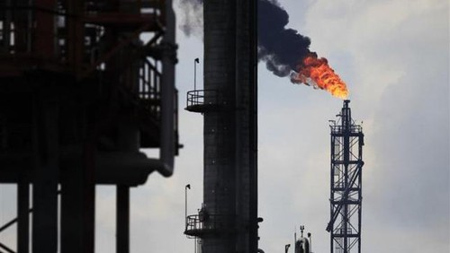

News
Harga Minyak RI Naik Jadi US$ 41,11/Barel di Agustus
wahyu daniel - detikfinance
Jumat, 02/09/2016 13:40 WIB

Jakarta - Sepanjang Agustus 2016 lalu, harga minyak mentah Indonesia (ICP) naik tipis US$ 0,41/barel, menjadi US$ 41,11/barel, dibandingkan bulan sebelumnya US$ 40,7/barel.
Dalam keterangan Direktorat Jenderal (Ditjen) Migas, Kementerian ESDM, Jumat (2/9/2016), harga SLC/Minas mencapai US$ 41,75 per barel, naik US$ 0,98 per barel dari US$ 40,77 per barel di Juli 2016.
Peningkatan harga minyak mentah Indonesia tersebut, sejalan dengan perkembangan harga minyak mentah utama di pasar internasional, yang diakibatkan oleh beberapa faktor yakni:
- Berdasarkan publikasi IEA (International Energy Agency) dan OPEC (Organization of the Petroleum Exporting Countries) di Agustus 2016, proyeksi permintaan minyak mentah global tahun ini naik 0,08-0,2 juta barel per hari, dibandingkan proyeksi bulan sebelumnya:
- IEA memproyeksikan permintaan minyak mentah global tahun 2016 naik 0,2 juta barel per hari menjadi sebesar 96,3 juta barel per hari.
- OPEC memproyeksikan permintaan minyak mentah global tahun 2016 naik 0,08 juta barel per hari menjadi sebesar 94,26 juta barel per hari.
- Berdasarkan laporan EIA (Energy Information Administration), tingkat stok gasoline AS selama Agustus 2016 turun 6,2 juta barel, dibandingkan Juli 2016.
- Respons positif pasar atas rencana pertemuan negara-negara OPEC di September, yang akan membahas langkah-langkah untuk menstabilkan harga pasar minyak mentah.
- Adanya ketegangan geopolitik di Timur Tengah, yaitu kapal patroli AS memberikan tembakan peringatan ke kapal patrol Iran di Teluk Persia, dan fasilitas minyak serta pembangkit listrik Arab Saudi terkena rudal yang ditembakkan dari Yaman.
Untuk kawasan Asia Pasifik, peningkatan harga minyak mentah selain disebabkan oleh faktor-faktor tersebut, juga dipengaruhi oleh selesainya pemeliharaan berkala kilang di Korea Selatan.
Selengkapnya perkembangan harga rata-rata minyak mentah utama di pasar internasional selama Agustus 2016 dibandingkan Juli 2016, sebagai berikut:
- WTI (Nymex) tidak berubah yaitu US$ 44, 80 per barel
- Brent (ICE) naik US$ 0,63 per barel dari US$ 46,53 per barel menjadi US$ 47,16 per barel
- Basket OPEC naik US$ 0,39 per barel dari US$ 42,68 per barel menjadi US$ 43,07 per barel
source:
detikfinance